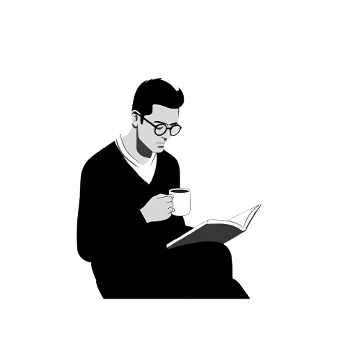

Hi, สวัสดี
Noppadol Weerakitti

Creating digital experiences with purpose.
I design and develop thoughtful solutions that bridge the gap between user needs and business goals. Currently exploring the intersection of design systems and sustainable practices.
About
With a background in both design and development, I approach projects with a holistic perspective. I believe in the power of simplicity and the importance of considering the user at every step of the process.
Recent Work
My portfolio includes projects across various industries, always with a focus on creating clear, effective solutions. I enjoy working on projects that challenge me to think differently and push my creative boundaries.